How do we store a billion documents so we can answer a query in under 200 ms? The inverted index, query processing, layout and construction.
A. Anand · lecture 12 study deck
Part I
Retrieval & the inverted index
From an information need to a data structure that finds matching documents fast.
Why we index text
Text mining tasks
Categorization
Label web pages, tweets, news
Spam / topic / sentiment
Supervised over text features
Finding relevant information
Information retrieval (search)
Plagiarism detection
Patent-violation finding
Clustering & topics
Latent topic discovery
Document clustering
Unsupervised structure
All of these first need the text in a form we can search and count quickly — that form is the index.
Application · web search
Information need → query → relevance
Three definitionsInformation need — the topic a user wants to know about ·
Query — a translation of that need into input for the engine ·
Relevance — a document is relevant if it (partially) answers the need.
Need: “Where can I download the latest Eclipse beta for macOS?” → query eclipse download osx.
Queries are incomplete, underspecified and ambiguous — the engine still must rank well.
Pipeline: crawl & index the collection → retrieve & score / rank results → present.
Budget for the whole retrieval step: < 100–200 ms. Slides credit: C. Hauff.
Application · plagiarism detection
Finding re-used text
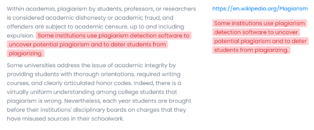
The same “finding relevant information” machinery matches a passage against a huge
reference collection — here a sentence echoing a Wikipedia source. Retrieval under the hood.
Application · vector / embedding search
Search beyond keywords
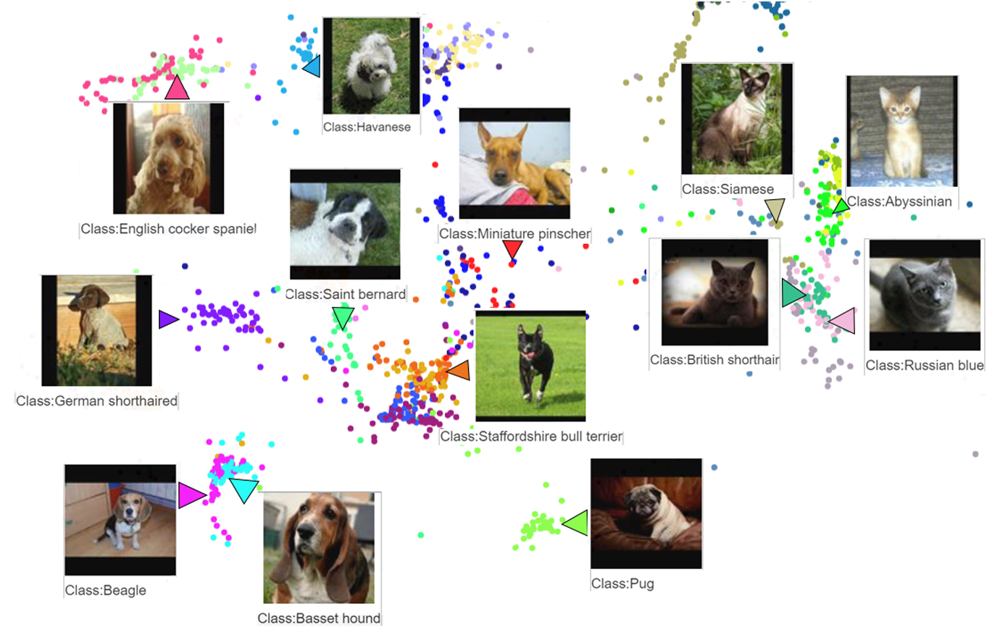
Items embedded as vectors cluster by similarity; a query finds its nearest neighbours.
Modern search mixes this with the classic inverted index. (Google vector search.)
Question
You have a collection of millions of documents, each ~1000 words. To find every document that contains a keyword — say “tu delft” — what data structure could you build so you avoid scanning the whole collection on every query?
Scanning every document for every query is hopeless at this scale.
Think — then → for the answer.
The core data structure
The inverted index: lexicon → postings
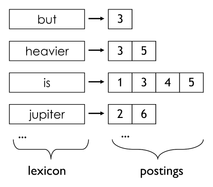
For each termt we store a postings list: every docID containing t,
kept sorted. The lexicon maps terms → their list. A posting = ⟨docID, score, positions, …⟩.
Postings-list location — a pointer to where the list lives, for retrieval.
Term identifier (tid) — for lookups, matching and range queries.
Document frequency (df) and statistics — needed for ranking.
Two classic implementations: a hash-based lexicon and a B+-tree lexicon.
Lexicon data structure · option A
Hash-based lexicon
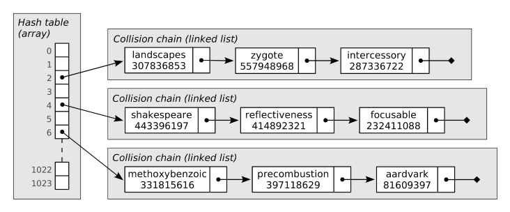
Constant-time lookups via a hash table; collisions resolved by chaining.
But: the whole lexicon must sit in memory, updates are hard, and
range / substring / matching queries are not supported.
Lexicon data structure · option B
B+-tree lexicon
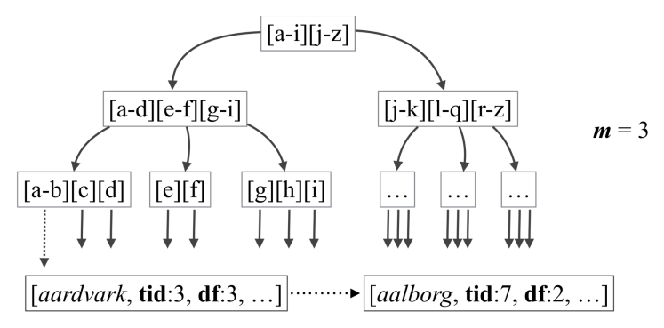
Lookups in O(log n), range search in O(log n + k).
Leaf nodes are linked for efficient range scans, it handles vocabulary dynamics (added / removed terms),
and works on secondary storage.
Part II
Query processing
Walking the postings lists to answer Boolean and ranked queries — one term at a time, or one document at a time.
Query: is heavier
Conjunctive vs. disjunctive queries
heavier
→
35
is
→
1345
Two modes over the same lists
Conjunctive — is AND heavier = intersection = {3, 5}.
Disjunctive — is OR heavier = union = {1, 3, 4, 5}.
Lists are sorted by docID, so both are a single merge-style walk — no random lookups.
Query processing strategy A
Term-at-a-time
Idea
Process one postings list fully before the next. Keep in-memory accumulators
(one partial score per candidate doc) and update them as each list streams by.
Read is: seed accumulators for docs 1, 3, 4, 5.
Read heavier: add its contribution to docs 3 and 5.
At the end, accumulators hold the final scores; sort to rank.
Best for disjunctive queries — every matching doc gets an accumulator.
Query processing strategy B
Document-at-a-time
Idea
Open a pointer into every list at once and move them together, computing each
document's full score before advancing — natural for intersections.
Find the max docID currently under any pointer.
Advance every other pointer up to that docID.
If all pointers agree on the same docID → report it, then step all forward by one.
Only one accumulator needed at a time → low memory, good for conjunctive queries.
Faster intersections
Skip lists over postings
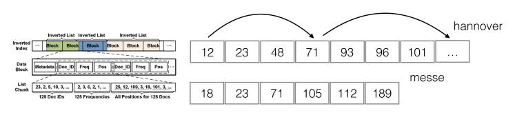
A skip list is a secondary index over a postings list: skip pointers jump ahead so a
doc-at-a-time walk can leap past non-matching docs. Skip every √(list length) postings
for a good time/space trade-off.
Part III
Index layout & storage
What a posting actually holds, how it maps onto disk blocks, and the forward index.
What a posting contains
Logical layout: a sequence of postings
Each posting carries
a docID, a tf-idf score (or other weight), and term positions within the document — and more as needed.
wt,d= tft,d× idft= tft,d× log
Ndft
The weight stored in a posting is typically tf-idf: term frequency tft,d
(how often t occurs in d) damped by inverse document frequency idft over
N documents, so common terms count for less.
On disk
Physical layout: parallel arrays
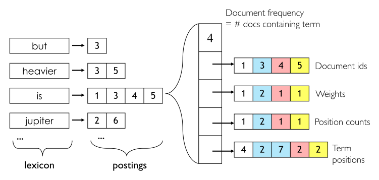
The list header stores df (# docs with the term). The body is split into parallel streams:
docIDs, weights, position counts, term positions — each stream compresses well on its own.
Blocks & chunks
Data organization: caching vs. decompression
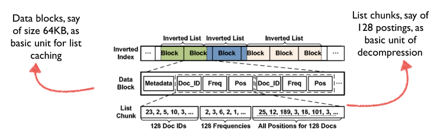
Data blocks (say 64 KB) are the unit of list caching; list chunks (say 128 postings)
are the unit of decompression. Many chunks are skipped, few blocks read; the system may
prefetch the next ~2 MB from disk.
The other direction
Forward index: doc → terms
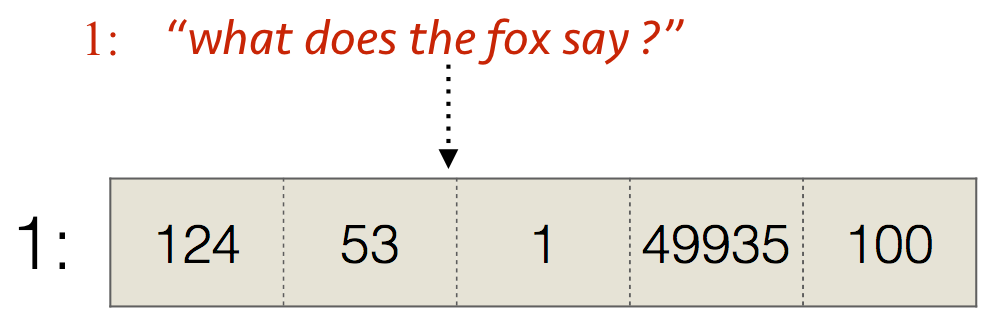
The forward index maps each docID → its term-ids in original order. It powers
snippet generation, proximity features for ranking, and per-doc term distributions for query expansion.
Part IV
Index construction
Inversion: turning a pile of documents into postings lists — in memory, on disk, and across a cluster.
Building the index
Inversion: documents → postings
Setup
Given documents D, each a bag of terms, build the postings lists. This process is called
inversion.
Memory-based
Entirely in RAM
Small collections where index + lexicon fit
Sort-based (disk)
External sort on term-ids
When D ≫ memory M
Merge-based (disk)
Build partial indexes, merge
Good for updates
In-memory inversion
Memory-based inversion
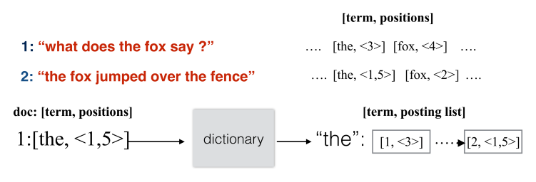
Stream each doc as [term, <positions>] through a dictionary for fast single-term
lookup/insert, appending to an extensible postings list per term. Fits only small collections.
When D ≫ memory
Sort-based inversion & its cost
See inversion as an external sort on term identifiers for data that won't fit in RAM.
Read a chunk of size M, sort it, write it back; then multiway-merge the D/M sorted runs.
Shortcomings: the dictionary may not fit, and intermediate data needs large scratch space.
Exercise · cost model
With N postings total, M fitting in memory, disk read/write cost c per posting:
each posting is written out and read back during merging, so cost scales as roughly
2cN (≈ one write + one read per posting), vs. ~0 extra I/O for a pure in-memory sort when N ≤ M.
Partial indexes
Merge-based inversion
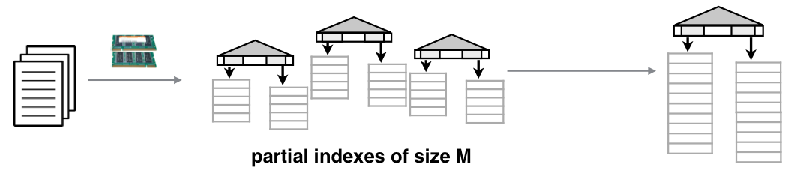
Build an in-memory index of size M, flush it as a partial index with a local lexicon
(postings compressed), repeat, then multi-way merge matching lists into one index.
Naturally supports updates on new data.
Distributed construction
Inversion with Map-Reduce
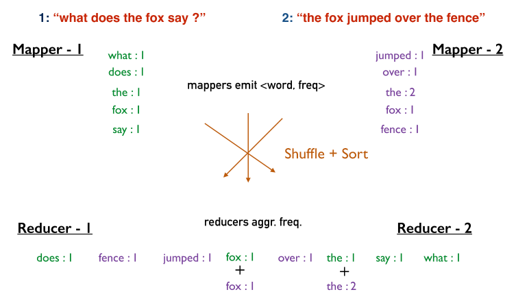
Map emits ⟨term, posting⟩ per document · Shuffle groups pairs by term across the network ·
Reduce concatenates/aggregates all postings of one term into its final postings list.
Lecture 12 · wrap-up
Summary
Take away
The inverted index maps each term to a sorted postings list of docIDs (with scores and positions);
a lexicon (hash or B+-tree) finds the right list.
Queries are answered by walking lists — term-at-a-time (accumulators, disjunctive) or
doc-at-a-time (aligned pointers, conjunctive), sped up with skip lists.
Postings are stored as parallel, compressed streams in blocks/chunks; built by inversion —
in memory, by sort or merge on disk, or distributed via Map-Reduce.